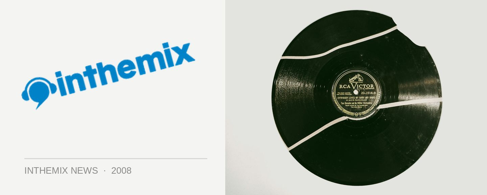

Experience heaven on the harbour
Feel like rocking on to the house music grooves of Johnny Gleeson aboard a 5-star luxurious ‘Starship’ cruiser? Well next Friday the 8th February you’ll get your chance. The beautiful and ultra-modern glass boat that’s booked for the Heaven on the Harbour party offers 360 degree panoramic harbour views spread over 3 spacious levels. Gleeson is well know as one of Australian house music’s most underrated heroes, so good at what he does that he got chosen by clubbing brand Pacha as an international resident, and next Saturday he’ll be joined on deck duties by Josh Flanagan, Charlie Brown, ZeroCool, Adam Jacob live on bongos and Lady Lauryn as MC.
The dress code for the event is ‘Pure White’, and there’s both standard and VIP tickets available, the latter of which includes an hour of complimentary Moet and canapes, a private bar and bathroom and access to the 360 degree balcony. And all tickets to the event include free entry to the official afterparty at Favela, along with complimentary bus transfers to Kings Cross after you leave the harbour.
Heaven on The Harbour departs from King St Wharf next Friday 8th February at 7:30pm, tickets on sale now on ITM.